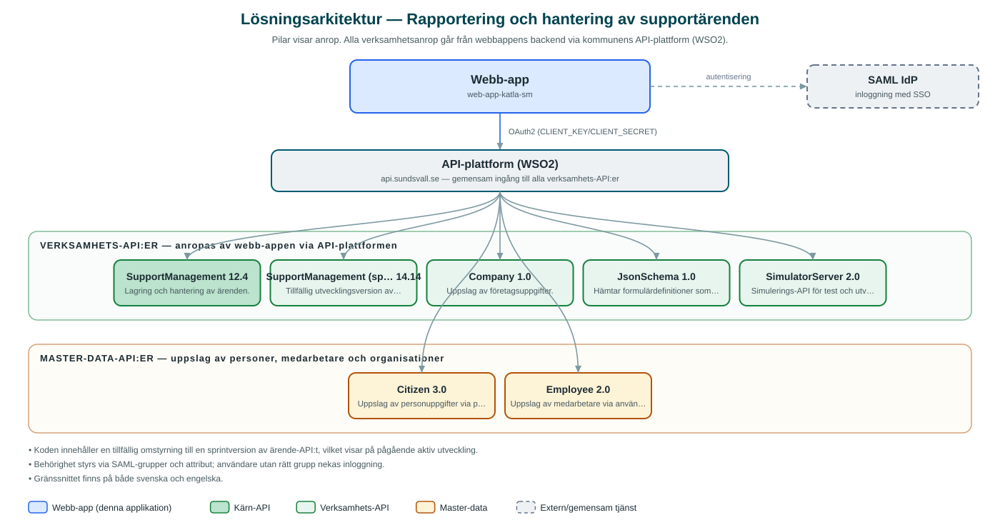

Rapportering och hantering av supportärenden
Internt verktyg där medarbetare rapporterar in och följer ärenden som hanteras i kommunens gemensamma ärendeplattform för verksamhetsstöd.
Om applikationen
Tjänsten låter inloggade medarbetare registrera rapporter och ärenden via formulär, med möjlighet att spara utkast innan de skickas in. Formulären styrs av centralt definierade formulärmallar, vilket gör att nya ärendetyper kan läggas till utan att bygga om applikationen.
I en översikt kan användaren se och filtrera sina ärenden, följa händelser som nya meddelanden, beslut och bilagor via notifieringar samt söka upp berörda personer via personnummer eller medarbetare via användarnamn.
Ärendena lagras och hanteras i kommunens gemensamma plattform för supportärenden. Applikationen är under aktiv utveckling.
Det här stödjer applikationen
- Registrera ärenden – Rapporter och ärenden fylls i via formulär med stöd för att spara utkast innan inskick.
- Formulär från mallar – Formulärens innehåll styrs av centrala formulärdefinitioner, vilket gör ärendetyper lätta att ändra.
- Ärendeöversikt med filter – Inloggade användare ser sina ärenden och kan filtrera bland pågående och avslutade.
- Notifieringar – Avisering vid nya meddelanden, beslut, bilagor och fasbyten i ärenden.
- Person- och medarbetarsökning – Berörda parter hämtas via sökning på personnummer eller användarnamn.
Teknisk dokumentation
Nedan beskrivs hur applikationen är uppbyggd, vilka API:er den använder och vad som krävs för att driftsätta den. Informationen är härledd ur källkoden och dess konfiguration på GitHub.
Arkitektur

Applikationen består av en webbaserad frontend (Next.js 16, React 19, i18next (svenska och engelska)) och en backend (Node.js, Express 4, TypeScript) som utvecklas i samma kodbas. Verksamhetsanrop går via kommunens gemensamma API-plattform (WSO2) – frontend pratar aldrig direkt med underliggande system. Inloggning: SAML (SSO). Övriga integrationer som förekommer i koden: SAML IdP.
Teknikstack
- Frontend: Next.js 16, React 19, i18next (svenska och engelska)
- Backend: Node.js, Express 4, TypeScript
- Test: Vitest (enhetstester), Playwright (e2e)
API-beroenden
Applikationen konsumerar följande API:er via kommunens API-plattform. Versionerna är hämtade ur källkodens API-konfiguration.
| API | Version | Användning |
|---|---|---|
| SupportManagement | 12.4 | Lagring och hantering av ärenden. |
| SupportManagement (sprint) | 14.14 | Tillfällig utvecklingsversion av ärende-API:t som trafiken styrs om till under pågående sprint. |
| Company | 1.0 | Uppslag av företagsuppgifter. |
| JsonSchema | 1.0 | Hämtar formulärdefinitioner som styr ärendeformulären. |
| SimulatorServer | 2.0 | Simulerings-API för test och utveckling. |
| Citizen | 3.0 | Uppslag av personuppgifter via personnummer. |
| Employee | 2.0 | Uppslag av medarbetare via användarnamn. |
Konfiguration och driftsättning
- Miljöfiler: frontend/.env-example och backend/.env.example.local
- CLIENT_KEY och CLIENT_SECRET mot kommunens API-plattform (WSO2)
- SAML-inställningar med IdP-adress och certifikat
- Funktionsflaggor i frontend, bl.a. utkastläge, ärendefilter och reducerad partsinformation
- Inställningar för automatisk utloggning vid inaktivitet
Noterbart ur källkoden
- Koden innehåller en tillfällig omstyrning till en sprintversion av ärende-API:t, vilket visar på pågående aktiv utveckling.
- Behörighet styrs via SAML-grupper och attribut; användare utan rätt grupp nekas inloggning.
- Gränssnittet finns på både svenska och engelska.
Källkod
Källkoden är öppen och finns hos Sundsvalls kommun på GitHub. I källkodsförrådet finns även instruktioner för att klona, konfigurera och starta applikationen i egen miljö.